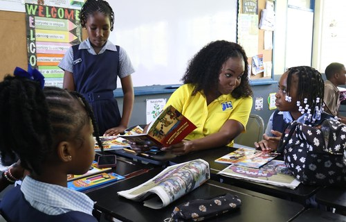
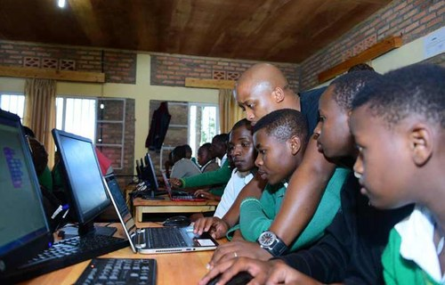
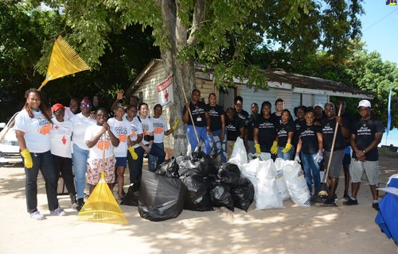
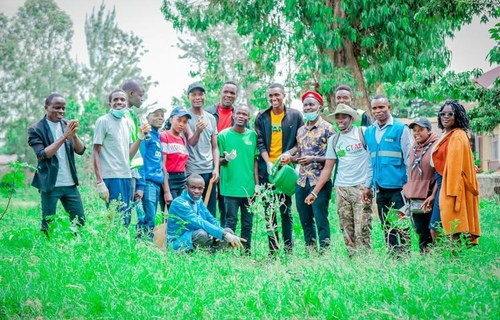
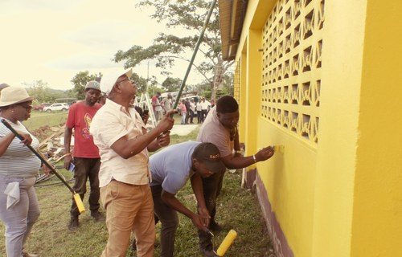

Community Learning Corners
Small reading and homework spaces created in community centres.
Building stronger Jamaican communities through service, education and outreach.
JCDA projects are focused on community improvement, education, environmental care and family support.
Tip: Click the left side of the image to go to Events, or click the right side to go to Contact.
Trees Planted
Youth Trained
Families Assisted
Centres Renovated

Small reading and homework spaces created in community centres.

Beginner technology and workplace skills training for young people.

Volunteer cleanups and public education on proper waste disposal.
Click any gallery image to preview it. Use the filter to view images by project type.

